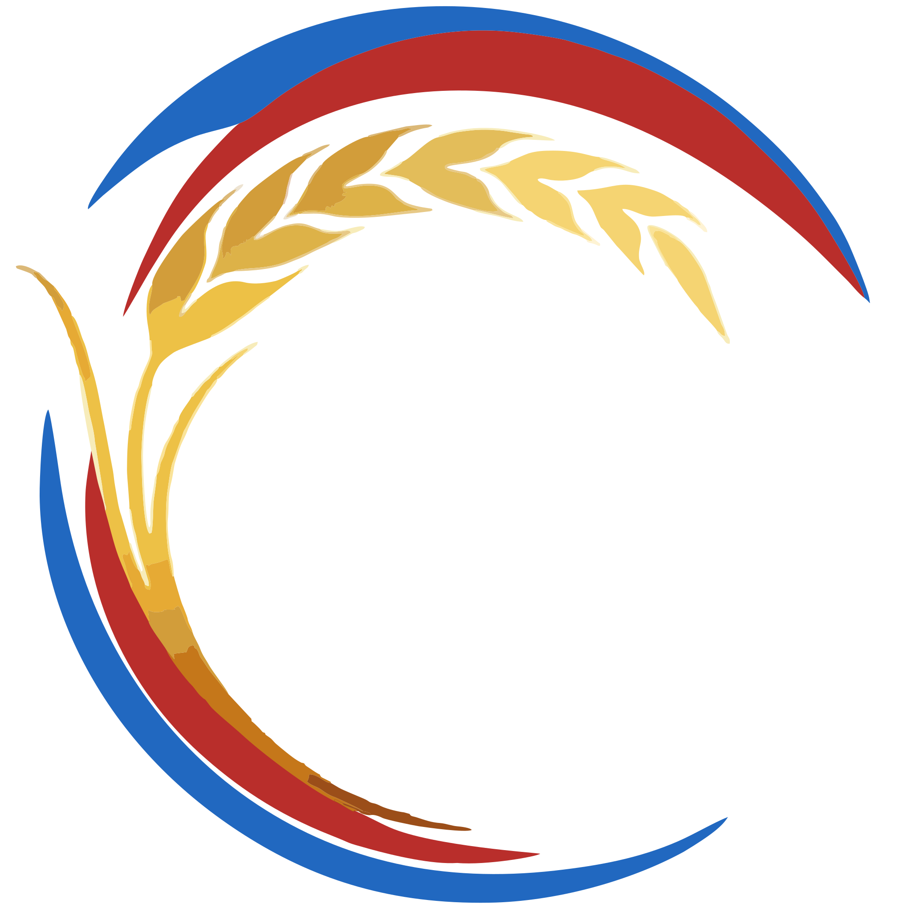

Карта подтверждённого
Какие факты и материалы уже подкрепляют проект
Пищевая индустрия · Технологии · Биоэкономика
Подготовка проектов в сфере специализированных, функциональных и обогащённых продуктов питания
Для членов Ассоциации СФПП и других участников рынка
Уважаемые участники Ассоциации СФПП и коллеги!
Совместно с Ассоциацией СФПП подготовлена платформа Поддержка.Tech. Она помогает предприятиям пищевой индустрии ориентироваться в программах поддержки, оценивать готовность проектов и готовить необходимые расчёты и документы.
Платформа предназначена для членов Ассоциации и других участников рынка. Здесь можно подобрать возможные инструменты поддержки и определить дальнейшие шаги по подготовке проекта.

В партнёрстве с Ассоциацией СФППОб АссоциацииПервый шаг
На первом разборе составим карту подтверждённых сведений, недостающих расчётов и документов, а также возможных маршрутов подготовки проекта.
Какие факты и материалы уже подкрепляют проект
Каких расчётов, документов и доказательств не хватает
Какие инструменты проверить и что подготовить дальше
Три формата
От первичного разбора задачи
до комплексной проверки проекта.
Для членов Ассоциации
Маршрут проекта и перечень необходимых материалов
Отдельный формат работы
Экспертное заключение в согласованном объёме
Для других участников рынка
Индивидуальный состав работ и план подготовки
Отраслевая экспертиза
Подготовка проекта требует понимания технологии, экономики и отраслевого рынка. Партнёрство с Ассоциацией СФПП помогает учитывать специфику пищевых производств. Состав экспертов определяется задачей проекта.
Ассоциация СФПППрактический опыт
Практика управления инвестиционными затратами, модернизацией производственных активов и запуском новых мощностей в пищевой промышленности.
Профессиональный опытСентябрь 2026 · Стратегическая сессия
Участие в стратегической сессии по развитию пищевой промышленности Москвы. Доклад связал изменения спроса с новыми продуктами, технологиями и экономикой производства.
Материал АссоциацииПроектная концепция
Представление модели государственно-частного взаимодействия для проекта пищевого ингредиента: сырьё, инфраструктура, производство и проверка спроса рассматриваются как связанные части проекта.
Концепция проектаПорядок работы
Разбираем технологию, экономику и права, собираем доказательства и подбираем возможные меры поддержки. Результат подготовки: информационное досье, в котором факты отделены от гипотез.
Продукт, стадия, регион и цель обращения
Бюджет, ресурсы, ограничения и требования программ
Паспорт проекта, подтверждения и план подготовки
Справочная навигация
Исследования, производство, гарантии и региональные меры. Откройте подборку, чтобы сопоставить задачу с направлениями поддержки и перейти к официальным документам.
Редакционная сверка каталога: октябрь 2026. Архивные отборы и сведения, требующие уточнения, отмечены отдельно. Условия программ и статус приёма уточняйте по официальным источникам перед обращением.
Платформа помогает подготовить проект, но не принимает решения о финансировании и не гарантирует одобрение. Применимость программы и её действующие условия подтверждает оператор. Углублённая экспертиза, объём сопровождения, сроки и стоимость согласуются отдельно. ГЧП рассматривается только там, где применима соответствующая модель; грант или льготный кредит сами по себе не делают проект ГЧП.
Первый шаг
Пройдите диагностику, чтобы подготовить исходные сведения, или сразу напишите о задаче.
Диагностика проекта
Ответьте на вопросы о задаче и материалах. В конце получите персональный список следующих шагов, который можно сохранить.
Диагностика не запрашивает имя, телефон и документы. Ответы обрабатываются только в вашем браузере и не сохраняются. Результат скачивается файлом по вашему нажатию; отправлять его или нет, решаете вы.
Предложения следуют из выбранных ответов. Это отправная точка для обсуждения, не автоматическое решение.
Продолжить разговор
Пришлите краткое описание задачи, регион проекта и результат диагностики, если вы её прошли. Не включайте конфиденциальные сведения в первое обращение.
Диагностика не запрашивает имя, телефон и документы. Ответы обрабатываются только в вашем браузере и не сохраняются. Результат скачивается файлом по вашему нажатию; отправлять его или нет, решаете вы.